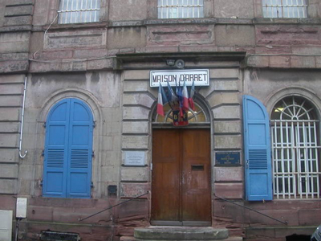
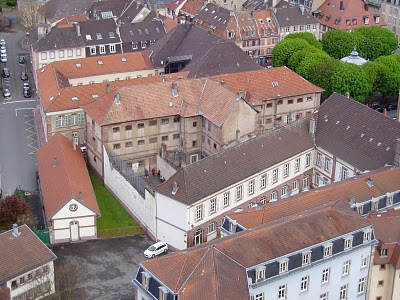
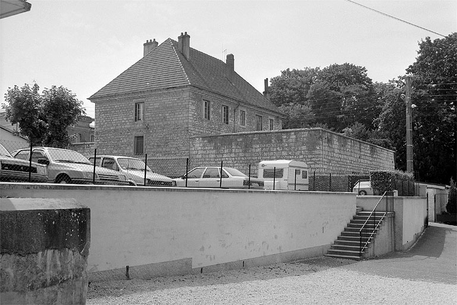
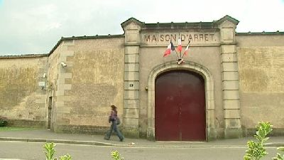
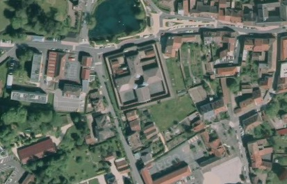
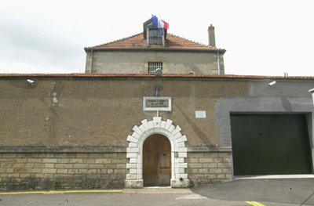
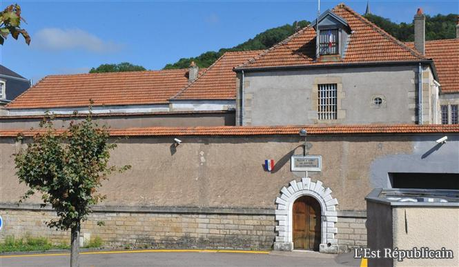
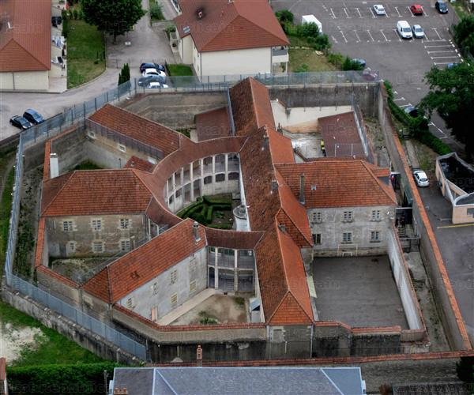

| Département | Images | Ville | Nom | Adresse | Période | Capacité | Histoire du lieu | Nombre d'exécutions |
| Territoire de Belfort (90) |   |
Belfort | Maison d'arrêt, de justice et de correction | 1, rue des Boucheries | En service depuis 1829 | 70 places, 13 surveillants (1962) 53 places (2015) |
Construits en 1724 en grès des Vosges, les abattoirs municipaux de Belfort deviennent maison d'arrêt après un siècle d'existence - et d'importants travaux de transformation. Installée non loin du palais de justice, en plein centre-ville, la prison, bâtiment unique comportant à la fois les quartiers pénitentiaires et les services administratifs, n'a jamais eu un rôle bien important sur un plan criminel, Belfort n'ayant pas de cour d'assises et dépendant de la Haute-Saône voisine. La seule exécution ayant eu lieu à Belfort au XXe siècle se déroula à deux cents mètres de la prison, au champ de Foire, actuel carrefour des avenues Sarrail et Foch. | Aucune exécution |
| Haute-Saône (70) |  |
Gray | Maison d'arrêt et de correction | Rue Signard | 1810-1926 | Construite à l'arrière du palais de justice dans le jardin de l'ancien couvent des Cordeliers. | Aucune exécution | |
| Haute-Saône (70) |   |
Lure | Maison d'arrêt et de correction | 33, rue de la Font | 1860-2014 | 75 places | En forme de croix grecque, avec une cour centrale en guise de rotonde. Construite sur d'anciens marécages asséchés, la prison est sujette à des mouvements de terrain causant des affaissements. En 2012, une première intention de fermeture n'aboutit pas. Suite à la présence de fissures dans le bâtiment administratif en 2013, le ministère de la Justice décide, au lieu d'accomplir les travaux nécéssaires, de procéder à la fermeture des lieux, décision extrêmement contestée par les 32 membres du personnel. La fermeture est effective le 15 octobre 2014. | Aucune exécution |
| Haute-Saône (70) |    |
Vesoul | Maison d'arrêt, de justice et de correction | 9, place Beauchamp | En service depuis 1837 | 48 places, 12 surveillants (1962) | La prison est construite sur un terrain de 4200 m², ancienne propriété du couvent de Annonciades, suivant les plans de l'architecte Le Beuffe. | Quatre exécutions en 1914, 1920 et 1949. |
{kind=link}
{kind=link}
{kind=link}
{kind=link}
{kind=link}
{kind=link}
{kind=link}
{kind=link}